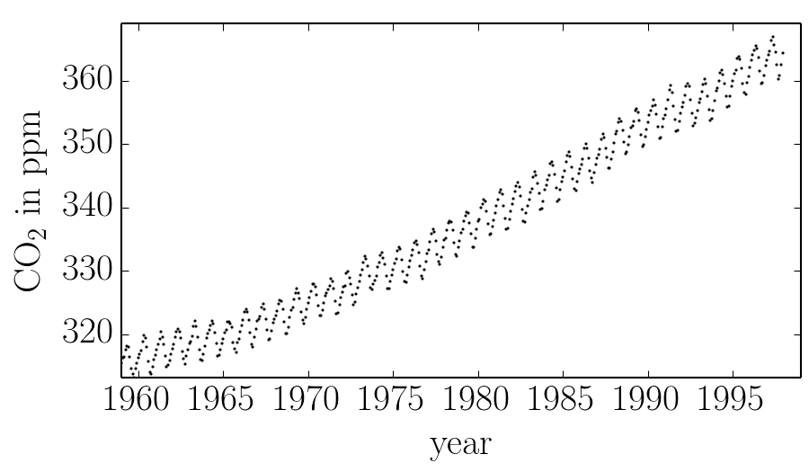

Tutorial: setting the hyperparameters¶
In this demo, we’ll reproduce the analysis for Figure 5.6 in Chapter 5 of Rasmussen & Williams (R&W). The data are measurements of the atmospheric CO2 concentration made at Mauna Loa, Hawaii (Keeling & Whorf 2004). The dataset is said to be available online but I couldn’t seem to download it from the original source. Luckily the statsmodels package includes a copy that we can load as follows:
import numpy as np
import statsmodels.api as sm
data = sm.datasets.get_rdataset("co2").data
t = np.array(data.time)
y = np.array(data.co2)
These data are plotted in the figure below:
In this figure, you can see that there is periodic (or quasi-periodic) signal with a year-long period superimposed on a long term trend. We will follow R&W and model these effects non-parametrically using a complicated covariance function. The covariance function that we’ll use is:
where
We can implement this kernel in George as follows (we’ll use the R&W results as the hyperparameters for now):
from george import kernels
k1 = 66.0**2 * kernels.ExpSquaredKernel(67.0**2)
k2 = 2.4**2 * kernels.ExpSquaredKernel(90**2) * kernels.ExpSine2Kernel(2.0 / 1.3**2, 1.0)
k3 = 0.66**2 * kernels.RationalQuadraticKernel(0.78, 1.2**2)
k4 = 0.18**2 * kernels.ExpSquaredKernel(1.6**2) + kernels.WhiteKernel(0.19)
kernel = k1 + k2 + k3 + k4
Then, to find the “best-fit” hyperparameters, we want to maximize the ln-likelihood as a function of the hyperparameters:
import george
gp = george.GP(kernel, mean=np.mean(y))
gp.compute(t)
print(gp.lnlikelihood(y))
In general, you’ll probably want to write a custom routine for optimizing this function—possibly using the gradient computed using george.GP.grad_lnlikelihood()—but George does come with a simple gradient-based non-linear optimization routine that isn’t a bad starting point:
p, results = gp.optimize(t, y)
Running this optimization, we find a final ln-likelihood of -100.22 (slightly better than the result in R&W) and the following parameter values:
| result | R&W | |
|---|---|---|
| \(\theta_{1}\) | 66.10 | 66.00 |
| \(\theta_{2}\) | 4488.61 | 4489.00 |
| \(\theta_{3}\) | 2.16 | 2.40 |
| \(\theta_{4}\) | 8100.55 | 8100.00 |
| \(\theta_{5}\) | 0.91 | 1.18 |
| \(\theta_{6}\) | 1.00 | 1.00 |
| \(\theta_{7}\) | 0.87 | 0.66 |
| \(\theta_{8}\) | 0.11 | 0.78 |
| \(\theta_{9}\) | 0.20 | 1.44 |
| \(\theta_{10}\) | 0.11 | 0.18 |
| \(\theta_{11}\) | 2.58 | 2.56 |
| \(\theta_{12}\) | 0.19 | 0.19 |
We can plot our prediction of the CO2 concentration into the future using our optimized Gaussian process model by running:
x = np.linspace(max(t), 2025, 2000)
mu, cov = gp.predict(y, x)
std = np.sqrt(np.diag(cov))
and this gives a result just like Figure 5.6 from R&W: